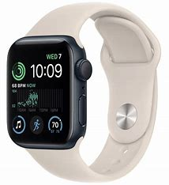

 <div class="flex items-center justify-between pb-5">
    <h2 class="text-3xl font-semibold">Favorites</h2>
</div>
<div class="flex flex-wrap gap-y-4 mb-5  ">
@for (item of [1,2,3,4,5]; track $index) {
            <div class="lg:w-[25%] md:w-4/12 sm:w-6/12  px-2 py-3">


              <div class=" hover:scale-[1.05] transition-all duration-[0.5s] bg-white p-3 rounded-lg shadow-lg">
                <owl-carousel-o [options]="customOptionsCat">
                  @for (item of [1,2,3]; track $index) {
                  <ng-template carouselSlide>
                    <div  class="text-center cursor-pointer">
                      
                    </div>
                  </ng-template>
                  }
                </owl-carousel-o>

                <h5 class="my-2 font-semibold">Apple Watch Series 4</h5>
                <div class="flex justify-between">
                  <p class=" my-1 text-[#4880FF] font-semibold ">1200$</p>
                  <div class="cursor-pointer  p-1 rounded-full color1 d-flex items-center justify-center">
                    <i class="fa-regular fa-heart "></i>
                  </div>

                </div>

                <div class="flex my-2">
                  <i class="fa-solid fa-star text-yellow-400"></i>
                  <i class="fa-solid fa-star text-yellow-400"></i>
                  <i class="fa-solid fa-star text-yellow-400"></i>
                  <i class="fa-solid fa-star-half-stroke text-yellow-400"></i>
                  <i class="fa-regular fa-star text-yellow-400"></i>
                </div>
                <button class=" bg-slate-100 text-sm font-semibold rounded-md px-3 py-1 my-2 ">Edit product</button>
              </div>
            </div>
}
</div>
